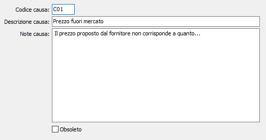

Cause annullamento/respinta richieste
La tabella consente di creare, individuandole in base ad un codice alfanumerico di 3 caratteri, descrizioni relative alle cause che potranno intervenire in caso di esito, che portino all'annullamento oppure alla respinta da parte del fornitore della richiesta di offerta.

CODICE CAUSA: codice alfanumerico di 3 caratteri per identificare la causa. Sul campo sono attive le funzioni di ricerca (F9) sulla tabella stessa.
DESCRIZIONE CAUSA: campo alfanumerico di 50 caratteri la descrizione sintetica della causa. Questa descrizione viene visualizzata sulle finestre di ricerca, ma non viene riportata sul documento.
NOTE CAUSA: campo note per descrivere in maniera dettagliata la causa, che sarà riportato nel campo note del rigo della richiesta di offerta che sarà annullato o respinto.
OBSOLETO: flag attivabile dall’utente per inibire il possibile utilizzo dell’elemento di tabella in esame nelle successive transazioni.